Ein strukturierter Datensatz, der den eigenen Bedürfnissen entspricht, ist recht selten anzutreffen. Daher ist die Transformation der Daten in die gewünschte Form unvermeidbar. Mit OpenRefine lassen sich die Daten dennoch bändigen. Die Herangehensweise erkläre ich wie immer anhand meines manipulierten Datensatzes, der hier heruntergeladen werden kann. Ich werde den Datensatz, der Informationen über die Mitglieder des Bundestages (MdB) enthält, etwas umgestalten.
So sieht mein Plan aus – ich will die Informationen aus der Spalte "Name, Vorname" zergliedern. Genau genommen beabsichtige ich den Namen, Vornamen und Partei jedes Abgeordneten in eine separate Spalte überführen.
Nachdem ich die Daten importiert habe, wähle ich das Dropdown Menü der Spalte "Name, Vorname" aus. Dabei fahre ich mit der Maus über den Menüpunkt Edit column und wähle im rechten Seitenmenü die Option Split into several columns aus.
Ein neues Menüfenster öffnet sich. Hier muss ich definieren wie OpenRefine die Datenzeile zergliedern soll. Ich kann hier zwischen zwei Optionen wählen – by separater und by field lenghts. Wer sich den Datensatz und insbesondere die Spalte "Name, Vorname" angeguckt hat, dem ist vielleicht aufgefallen, dass die einzelnen Informationsbrocken Name, Vorname und Partei durch ein Komma getrennt sind. Dieses gemeinsame Merkmal, das über alle Datenzeilen hinweg existiert, will ich mir zunutze machen. Daher wähle ich die Option by separater aus. Wenn ein anderes Zeichen die Informationen trennt, muss man in der Zeile unterhalb das entsprechende Zeichen anpassen. Da ich die Spalte "Name, Vorname" nach der Transformation nicht löschen will, entferne ich auf der rechten Seite das Häkchen Remove this column. OK klicken.
Drei neue Spalten sind das Ergebnis der Transformation. Jetzt passe ich noch den Namen der Spalte an. Dazu fahre ich mit der Maus über das Dropdown Menü der Spalte "Name, Vorname" zum Menüpunkt edit column und wähle dort die Option rename this column aus.
Hier editiere ich den Namen und bestätige die Eingabe mit OK. Die anderen zwei Spalten werden ebenso angepasst.

Follow @pushthings4ward
Im Rahmen der Datenbereinigung kommt man um die Suchen und Ersetzen Funktion nicht herum. Die Herangehensweise erkläre ich wie immer anhand meines manipulierten Datensatzes, der hier heruntergeladen werden kann. Dabei werde ich ein Element innerhalb des Datensatzes, der Informationen über die Mitglieder des Bundestages (MdB) enthält, modifizieren bzw. korrigieren. Dazu nutze ich wieder OpenRefine.
In der Spalte Name, Vorname ist neben dem Namen und Vornamen auch die Parteizugehörigkeit aufgeführt. Hier habe ich einen kleinen Fehler eingebaut. Die Parteikennung “DIE LINKE.” ist durch einen Punkt am Ende verunreinigt. Diesen will ich entfernen bzw. durch die korrekte Ausprägung “DIE LINKE” ersetzen. Dazu wähle ich das Drop Down Menü der Spalte aus und bewege die Maus über den Menüpunkt Edit cells und wähle dann anschließend die Funktion Transform aus.

Eine Eingabemaske öffnet sich. Folgende Syntax gebe ich jetzt in die Konsole ein value.replace(“DIE LINKE.”, “DIE LINKE). Mit dem Befehl wird OpenRefine angewiesen die Spalte “Name, Vorname” nach der Ausprägung “DIE LINKE.” zu durchsuchen und diese durch die neue Bezeichnung “DIE LINKE” zu ersetzen. Im Preview Fenster ist die erfolgreiche Transformation in Zeile 7 bereits sichtbar. Ich bestätige die Eingabe durch OK und schließe damit die Transformation ab.

Published: 23 März, 2012 CONTENT NUTZUNG: CC BY-NC-SA 3.0
Follow @pushthings4ward
Wo muss man viel Zeit, Geduld und Einfallsreichtum investieren? Jep, in die Datenbereinigung. Die meisten Datensätze bleiben in der Regel Rohdiamanten, obwohl mehr rauszuholen wäre. Das nachfolgende Tutorial dient als Motivationsgrundlage.
Das Problem: Wie lassen sich die Geldbeträge aus der Spalte “Delikt” in separate Spalten überführen? In OpenRefine lässt sich das wie folgt realisieren:

Die einzelnen Schritte: Ich werde zunächst eine neue Spalte anlegen. Dazu wähle ich aus dem Dropdown Menü der Spalte “Delikt” die Option Edit column und den Befehl Add column based on this column aus.
Eine neue Eingabemaske öffnet sich. Dort definieren wir zuerst den neuen Spaltennamen “Euro”. Anschließend wähle ich “Clojure” als Syntax Sprache aus. Danach geben wir folgende Syntax ein:
Was macht die Syntax? Der Code sucht in der Spalte “Delikt” nach Elementen, die das Sonderzeichen “€” tragen. Wenn ein passendes Element gefunden wird, kopiert OpenRefine dieses in die neue Spalte “Euro”.

Das Ergebnis nach der ersten Transformation kann sich durchaus sehen lassen. Alle Elemente wurden erfolgreich identifiziert und isoliert.

Der erste Schritt hat lediglich die Eurobeträge extrahiert. Nun sollen auch die Dollarbeträge isoliert werden. Dazu wiederholen wir die Schritte mit zwei kleinen Änderungen.
Die erste Änderung betrifft den Spaltennamen. Die neue Spalte heißt nun “US Dollar”. Die zweite Änderung bezieht sich auf die Syntax. Wir tauschen das “€” Zeichen durch “$” aus.
Nach der zweiten Datenextraktion hat der Datensatz an Wert gewonnen. Wir konnten Informationen, die vorher nur schwer zugänglich waren, gezielt isolieren und für weitere Analysen nutzbar machen.
Der zweite Schritt soll nun die störenden Sonderzeichen “$“, “€“, “.” entfernen. Dazu wähle ich aus dem Dropdown Menü der Spalte “US Dollar” die Option Edit cells und den Befehl Transform aus.
Was macht die syntax? Der Code durchsucht die Spalte “US Dollar” nach folgenden Elementen “$“, “.” und löscht diese. Die Funktion dürfte den meisten von uns unter den Namen “Suchen und Ersetzen” bekannt sein. In der Voransicht kann man das Ergebnis der Transformation betrachten. Die letzten Schritte wendet man auch auf die Spalte “Euro” an, um die Datenbereinigung vollständig abzuschließen.

Zwei Transformationsschritte waren notwendig, um den Datensatz aufzuwerten. Mit den zwei Schritten konnten wir Daten nutzbar machen, die vorher nur schwer zugänglich waren.

Follow @pushthings4ward
Bevor man mit einer Datenanalyse beginnt, sollte man den Datensatz bereinigen. Eine unterschätzte Fehlerquelle beim Umgang mit großen Datensätzen ist das "Doppelte Lottchen" - Datenzeilen mit identischen Inhalt. Insbesondere bei quantitativen Analysen können sie das Ergebnis der Auswertung verzerren. Daher ist es ratsam diese vorher zu identifizieren und gegebenenfalls zu entfernen. In OpenRefine lässt sich das wie folgt realisieren.
Das Beispiel: Mein Datensatz enthält drei Doppler – die Doppler weisen dabei Unterschiede in der Schreibweise (Groß- / Kleinschreibung) auf. Inhaltlich sind die Doppler jedoch identisch. Diese will ich nun entfernen. Dazu geh ich wie folgt vor:

Die einzelnen schritte: Ich werde zunächst die Daten sortieren. Dazu wähle ich aus dem Dropdown Menü der Spalte “Daten” die Option Sort aus.

Eine neue Eingabemaske erscheint. Hier definiere ich den Sortiermodus für den Inhalt. Da der Datensatz überwiegend Textbausteine enthält, wähle ich die Option text aus. Wenn der Datensatz nur Zahlen enthalten würde, wäre die Option numbers geeigneter. Abschließend wähle ich die Reihenfolge der Sortierung a-z und bestätige meine Auswahl mit OK.

Nach der Transformation befinden sich die Doppler untereinander. Diese Reihenfolge übernehme ich und verwerfe somit die alte. Hierzu wähle ich aus dem Dropdown Menü die Option Sort und anschließend die Auswahl Reorder rows permanently aus.

Im nächsten Schritt werde ich ich die Datenzeilen mit identischen Inhalt leeren. Dazu wähle ich aus dem Dropdown Menü der Spalte “Daten” die Option Edit cells und dann die Funktion Blank down aus.
Das Ergebnis ist mehr als unbefriedigend. Lediglich ein Doppler wurde erfolgreich entfernt. Offenbar genügt bereits eine Abweichung in der Schreibweise (Groß- / Kleinschreibung), um die Erkennung von Dopplern zunichte zu machen. Aus semiotischer Sicht mag das korrekt sein – aus semantischer Sicht allerdings unbrauchbar. Somit muss ich nun tricksen, um das gewünschte Ergebnis zu erhalten.
Ich klicke in der Menüleiste auf “Undo/Redo“, um meine letzte Transformation rückgängig zu machen. Dafür wähle ich aus dem Log die Auswahl Reorder rows.

Danach wähle ich aus dem Dropdown Menü der Spalte “Daten” die Option Edit cells, Common transforms und anschließend die Option To uppercase aus. Der Befehl transformiert den gesamten Inhalt aller Zellen in Großbuchstaben. Inhaltlich gehen dabei keine Informationen verloren.

Das Ergebnis der Transformation sieht nun so aus.
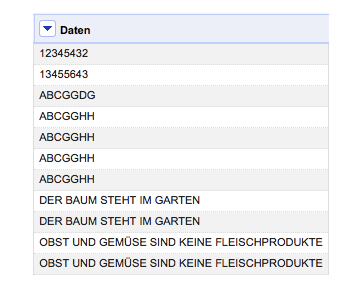
Nun werde ich erneut die Zeilen mit den identischen Einträgen leeren. Dazu wähle ich aus dem Dropdown Menü der Spalte “Daten” die Option Edit cells und anschließend den Befehl Blank down aus.
Das Ergebnis der neuen Transformation kann sich sehen lassen. Die Doppler wurden entfernt. Dafür verunreinigen nun mehrere leere Datenzeilen meinen Datensatz.

Diese werde ich im nächsten Schritt gezielt entfernen. Hierfür wähle ich aus dem Dropdown Menü der Spalte “Daten” die Option Facet, Customized facets und dann den Befehl Facet by blank aus.

In der linken Menüleiste sehe ich das Ergebnis der Prozedur. Es wurden fünf leere Datenzeilen gefunden. Durch klicken auf true aktiviere ich diese Auswahl, die ich jetzt gezielt in der Datenansicht betrachten kann.

Und so löscht man die leeren Datenzeilen – hierzu wähle ich aus dem Dropdown Menü der Spalte “All” die Option Edit rows und dann die Funktion Remove all matching rows aus. Somit werden die aktiven Datenzeilen gezielt aus dem Datensatz entfernt.

Das finale Ergebnis der Datenbereinigung sieht nun so aus. Keine Doppler oder leere Datenzeilen.

Published: 2. Februar, 2013 CONTENT NUTZUNG: CC BY-NC-SA 3.0
Follow @pushthings4ward
Vergangene Woche hat Zeit Online die Content API (beta) von der Datenleine gelassen. Um in den Datenpalast zu gelangen, muss man sich zunächst einen API-Key besorgen. Mit dem API-Key kann man entweder direkt über den API-Explorer die Daten durchforsten oder man greift auf OpenRefine zurück.
Nachdem man OpenRefine gestartet hat, legt man ein neues Projekt an. Dabei wählt man die Option “Web Addresses (URLs)” aus. Anschließend muss man die URL bzw. den sog. HTTP Request definieren. Aus der nachfolgenden Illustration lässt sich die Zusammensetzung der Suchanfrage ableiten.

Die ZEIT Online API Dokumentation beschreibt kurz und bündig die Möglichkeiten der API. Das Resultat der Abfrage wird im JSON Format ausgeliefert. In der Preview Ansicht kann man entweder alle Informationen übernehmen oder nur Teilfragmente (Title, URI, Supertitle … etc.).
Published: 25. November, 2012 CONTENT NUTZUNG: CC BY-NC-SA 3.0
Follow @pushthings4ward
Um eine Datenspalte in OpenRefine zu duplizieren, gehe ich wie folgt vor. Ich importiere zunächst einen beliebigen Datensatz in OpenRefine. Ich entscheide mich für einen zweispaltigen Datensatz mit sechs Datenzeilen rund um das Thema Obst und Gemüse.
Die Spalte “Gemüse” werde ich jetzt klonen. Warum? Ich will beim Herumdoktern mit dem Datensatz keinen Datenverlust oder eine Verunreinigung der Originalspalte riskieren. Dazu wähle ich im Dropdown Menü der Spalte “Gemüse” zunächst die Option Edit column und anschließend die Auswahl Add column based on this column aus.

Ein neues Eingabefenster öffnet sich. Hier definiere ich nun den Namen der neuen Spalte “Neue Gemüse Spalte“. Anschließend nutze ich den GREL-Befehl cells["Gemüse"].value.
Um die Spalte “Gemüse” zu klonen. Im Vorschaufenster kann man das Ergebnis überprüfen.

Alternativ kann man auch den Befehl value verwenden, um die Spalte zu klonen.
Follow @pushthings4ward
Das Szenario: Zu Beginn meiner Recherche liegt
Datensatz 1 vor. Dieser setzt sich aus vier Spalten ("Vorname", "Name", "Alter", "Geschlecht") zusammen. Ergänzende Information ("Wohnort", "Beruf") finde ich in Datensatz 2. Um bei der Analyse nicht ständig zwischen den zwei Datensätzen springen zu müssen, sollen die Information ("Wohnort", "Beruf") aus dem zweiten Datensatz dem ersten hinzugefügt werden.Wichtiger Hinweis: Die erfolgreiche Datenfusion ist an eine wichtige Bedingung geknüpft. Beide Datensätze müssen über eine Datenspalte verfügen, die identisch ist. Sie bildet die Orientierungsgrundlage für die korrekte Zuordnung der einzelnen Datenzeilen. Für das gewählte Beispiel wäre das die Spalte
"Vorname". Anhand dieser Spalte wird OpenRefine die Datenfusion vornehmen.
Die einzelnen Schritte: Ich öffne in OpenRefine den Datensatz 1, der in den folgenden Ausführungen als D1 bezeichnet wird. Dort wähle ich zunächst aus dem Dropdown Menü der Spalte “Vorname” die Option Edit column aus und klicke anschließend auf die Option Add column based on this column.
Eine neue Eingabemaske öffnet sich. Aus dem Datensatz 2 aka. D2 soll die Datenspalte “Beruf” nach D1 kopiert werden. Als erstes definiere ich den Spaltnamen “Beruf“. Dann nutze ich die GREL Syntax, um den Datenfusionsprozess zu definieren.
GREL syntax:
cell.cross(“D2“,”Vorname“).cells[„Beruf“].value[0]In der Voransicht lässt sich das Ergebnis der Datenfusion begutachten. Wenn das Ergebnis korrekt ist, genügt ein abschließender Klick auf
OK, um die Transformation abzuschließen. Was genau habe ich mit der GREL Syntax gemacht? Ich öffne zuerst den Datensatz D2. Dann definiere ich die Orientierungsgrundlage für die Datenfusion – die Spalte “Vorname“. Abschließend lege ich die zu kopierende Spalte fest – “Beruf“.
In der Gegenüberstellung sieht man das Ergebnis der erfolgreichen Datenfusion. Die noch fehlende Datenspalte “Wohnort” würde man gemäß der Anleitung ergänzen.
Published: 1. September, 2012 CONTENT NUTZUNG: CC BY-NC-SA 3.0Follow @pushthings4ward
w, der den Link vervollständigen würde. Mit OpenRefine lässt sich die Transformation unkompliziert umsetzen.

Und so gehts – ich wähle zunächst aus dem Dropdown Menü der Spalte
“URL” die Option Edit cells aus und klicke anschließend auf die Option Transform.

Eine neue Eingabemaske öffnet sich. Hier nutze ich die GREL Syntax, um das fehlende
w zu ergänzen.
GREL Syntax:
“w” + value
Im der Voransicht ist das Ergebnis der Transformation bereits sichtbar. Wenn das Ergebnis korrekt ist, genügt ein Klick auf
OK, um die Transformation abzuschließen.
Im nächsten Anwendungsbeispiel kombiniere ich Daten über mehrere Spalten hinweg. In der nachfolgenden Darstellung sieht man eine zerstückelte URL. Die einzelnen Fragmente sollen nun wieder zusammengefügt werden.

Und so gehts – ich wähle zunächst aus dem Dropdown Menü der Spalte
“NAME” die Option Edit column aus und klicke anschließend auf die Option Add column based on this column.

Die GREL Eingabemaske öffnet sich. Hier vergebe ich zunächst den Namen für die neue Spalte
“FULL URL“. Danach nutze ich erneut die GREL Syntax, um die einzelnen URL Elemente zusammenzuführen.
GREL Syntax:
cells["HTTP"].value + “://” + cells["WWW"].value + “.” + cells["NAME"].value
Im der Voransicht lässt sich das Ergebnis der Transformation begutachten. Wenn das Ergebnis korrekt ist, genügt ein abschließender Klick auf
OK, um die Transformation zu finalisieren.
Was genau habe ich mit der GREL Syntax gemacht? Ich nutze die Syntax, um aus jeder Spalte das entsprechende Element zu kopieren und anschließend in die neue Spalte
“FULL URL” zu überführen. Diese Abschnitte der Syntax sind Rot hervorgehoben. Obendrein ergänze ich noch fehlende Satzzeichen, die sich nicht im Datensatz befinden. Diese Elemente habe ich Blau hervorgehoben.

Das finale Ergebnis ist die Spalte
“FULL URL” mit der vollständigen URL.

Published: 26. August, 2012 CONTENT NUTZUNG: CC BY-NC-SA 3.0
Follow @pushthings4ward
Transponier Funktion – ausgeschlossen. Die Vorzüge dieser Funktion will ich an einem Beispiel illustrieren. Hierfür benutze ich einen manipulierten Datensatz mit zwei Spalten. Während die Spalte mit der Bezeichnung “Name” nur ein Element enthält, weist die Spalte mit dem Namen “Sportabzeichen” mindestens zwei Elemente auf.
Zielsetzung: Ich will zunächst die Elemente aus der Spalte
“Sportabzeichen” auf mehrere Spalten aufsplitten und anschließend wieder auf die zwei Ausgangsspalten reduzieren. Somit kann ich dann anhand der Spalte “Sportabzeichen” saubere Cluster bilden. Nachdem clustern kann ich beispielsweise nur die Personen betrachten, die das Sportabzeichen Seepferdchen besitzen (Nina, Max, Anna, Elisa, August).
Und so gehts – ich wähle aus dem Dropdown Menü der Spalte
“Sportabzeichen” die Option Edit column und anschließend die Auswahl Split into several columns aus.
Ein neues Menüfenster öffnet sich. OpenRefine soll jetzt alle Elemente (Sportabzeichen) aus den Zellen der Spalte
“Sportabzeichen” auf mehrere Spalten aufteilen. Jedes Sportabzeichen ist durch ein Komma getrennt. Dieses Detail mache ich mir zunutze, indem ich das Komma als Trennungsmerkmal definieren by seperator. Um den Datensatz möglichst übersichtlich und sauber zu halten, setze ich noch zwei Häckchen. Was wird passieren? Mit Guess cell type erkennt OpenRefine, ob der neue Zelleninhalt beispielsweise numerischer Art ist. Remove this column entfernt die Ausgangsspalte. Klick auf OK.
Und so sieht das Zwischenergebnis der Transformation aus.
Nachdem die Details aus der Spalte
“Sportabzeichen” auf mehrere Spalten aufgeteilt wurden, kommt nun die Transponier Funktion zum Einsatz. Ich wähle aus dem Dropdown Menü der Spalte “Name” die Option Transponse und anschließend die Auswahl Transponse cells across columns into rows aus.
Eine neue Eingabemaske öffnet sich. Um alle vier Spalten (Sportabzeichen) zusammenzuführen, gehe ich folgt vor: Ich wähle zunächst die Spalte
“Sportabzeichen 1” und dann die Spalte “Sportabzeichen 4” aus. Dann markiere ich den Menüpukt One column und definiere den Namen für die neue/alte Spalte “Sportabzeichen“. Zu guter Letzt setzte ich noch zwei Häckchen, um leere Zellen bei der Transformation zu ignorieren Ignore blank cells und die vier Spalten zu einer zusammenzufassen Fill down in other columns. Klick auf OK.
Und so sieht das Ergebnis aus. Nun kann ich über die
Facet Funktion meine Clusterung vornehmen.
Published: 16. Juli, 2012 CONTENT NUTZUNG: CC BY-NC-SA 3.0
Follow @pushthings4ward
Text Facet Funktion von OpenRefine zu demonstrieren, werde ich für diese Übung einen von meinen manipulierten Datensätzen verwenden. Der Datensatz, der Informationen über die Mitglieder des Bundestages (MdB) enthält, kann für diese und weitere Übungen hier heruntergeladen werden. Nachdem ich die Daten importiert habe, wähle ich das Dropdown Menü der Spalte "Bundesland" aus. Dort wähle ich die Auswahloption Facet und anschließend Text Facet aus.
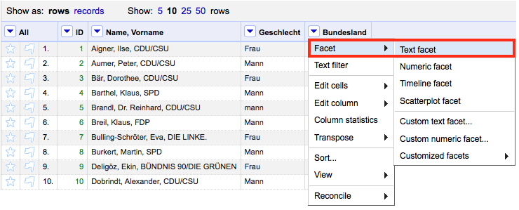
Auf der linken Seite öffnet sich nun ein Menü. Mit der
Text Facet Funktion hat OpenRefine alle Elemente aus der Spalte "Bundesland" zu homogenen Clustern zusammengeführt. Da diese Funktion case-sensitive ist, fasst sie die Cluster "Bayern" und "BAYERN" nicht direkt zusammen. Diese werde ich nun händisch zusammenführen. Wenn man die Maus über die einzelnen Clusternamen bewegt, erscheint am Rand der die Menüauswahl edit und include. Ich wähle die Option edit aus.
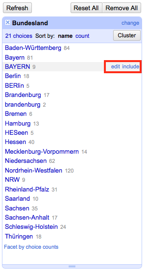
Ein Popup Fenster mit freier Texteingabe öffnet sich. Ich ersetze nun den Begriff
"BAYERN" durch den Ausdruck "Bayern" und klicke anschließend auf Apply.
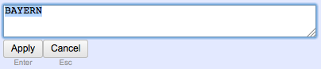
OpenRefine führt nun automatisch die zwei gleichnamigen Cluster zusammen. Das Ergebnis der erfolgreichen Fusion lässt sich anhand der Anzahl der finalen Zeilen hinter dem Cluster überprüfen. Gehörten vor der Transformation des Clusters
"Bayern" 81 Zeilen zum Cluster, sind es nach der Fusion 90 Datenzeilen, da die Datenzeilen des "BAYERN" Clusters hinzugekommen sind.
Published: 13. März, 2012 CONTENT NUTZUNG: CC BY-NC-SA 3.0
Follow @pushthings4ward
Parse cell text into numbers, dates … zu entfernen. Warum? Bei der Division und Multiplikation kann es zu unerwünschten Ergebnissen kommen, wenn OpenRefine den Zelleninhalt nicht richtig identifiziert. Um dies zu vermeiden, lasse ich das Häckchen weg.
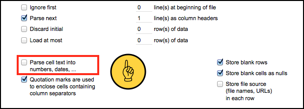
Für die Demo habe ich ein absolut unspektakulären Datensatz gewählt – drei Spalten mit sieben Datenzeilen.
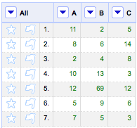
Als erstes muss ich OpenRefine sagen, dass es sich beim Inhalt der Zellen um numerische Werte handelt. Ich wähle aus dem Dropdown Menü der Spalte
“A” die Option Edit cells anschließend das Submenü Common transform und schließlich die Funktion To number aus. Dieser Schritt muss für alle Spalten wiederholt werden, die numerische Werte enthalten.
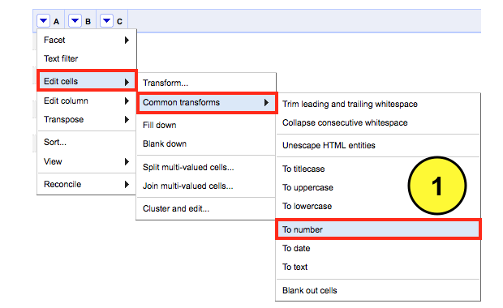
Wenn die Transformation für alle Spalten abgeschlossen ist, kann die Rechnerrei beginnen. Ich wähle aus dem Dropdown Menü der Spalte
“C” die Option Edit column und anschließend die Funktion Add column based on this column aus. Ohne Bedenken hätte ich auch die Spalte “A” oder “B” auswählen können, um eine neue Spalte anzulegen.
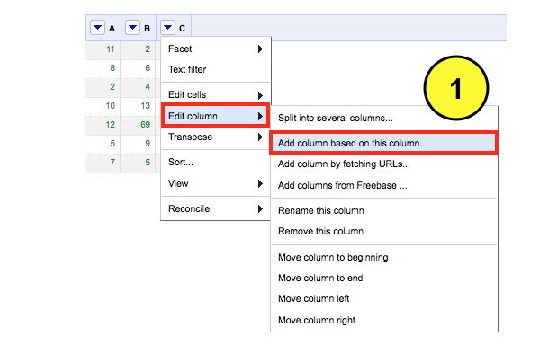
Ein neues Fenster öffnet sich. Hier definiere ich zunächst den Namen der neuen Spalte
“Ergebnis Division“, in der das Ergebnis meiner Division abgelegt werden soll. Danach weise ich OpenRefine mit dem GREL Befehlcells["A"].value / cells["C"].value die Zellen der Spalte
“A” durch die entsprechenden Zellen der Spalte “C” zu dividieren. In der Voransicht lässt sich das Ergebnis überprüfen. Wenn das Ergebnis korrekt ist, genügt ein Klick auf OK, um die Transformation abzuschließen.

Natürlich lassen sich auch andere Rechenaufgaben meistern.
Addition:
cells["A"].value + cells["C"].value
Subtraktion:
cells["A"].value - cells["C"].value
Division:
cells["A"].value / cells["C"].value
Multiplikation:
cells["A"].value * cells["C"].value
Durch die Hinzunahme der Klammer wird zunächst die Addition durchgeführt, bevor das vorläufige Ergebnis der spalte
“A+C” mit der Spalte “B” multipliziert bzw. im Beispiel darunter dividiert wird.(cells["A"].value + cells["C"].value) * cells["B"].value
(cells["A"].value - cells["C"].value) / cells["B"].value
Published: 9. Juli, 2012 CONTENT NUTZUNG: CC BY-NC-SA 3.0
Follow @pushthings4ward
Templating eine simple Möglichkeit Daten in die gewünschte Endform zu überführen. Die Templating Funktion befindet sich rechts oben im Menü unter der Auswahl Export.
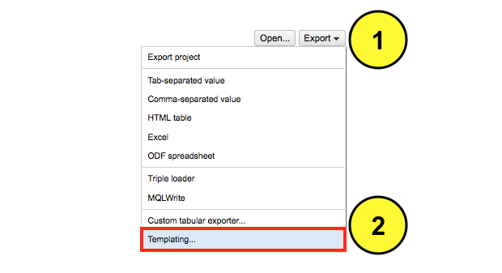
Dort finden sich mit TSV, CSV, HTML, Excel etc. bereits vordefinierte Exporteinstellungen wieder. Nach der Auswahl der Templating Funktion öffnet sich eine Eingabemaske. Während man auf der linken Seite der Eingabemaske die Datenstruktur der Daten definiert, sieht man in der rechten Spalte eine Vorschau der Datenstruktur. Wenn man die Templating Funktion zum ersten Mal nutzt, bietet OpenRefine eine eigene Definition für den Datenexport an. Diese verwerfe ich, da ich an dieser Stelle nur das Grundkonzept erklären will, d.h. ich entferne den Inhalt aus den folgenden Masken
Prefix, Row Template, Row Seperator, Suffix.
Um auf die einzelnen Spalten, zuzugreifen wähle ich folgende Befehlszeile: {{jsonize(cells["Geschlecht"].value)}} dieser Befehl trägt für jede vordefinierte Spalte (hier
Geschlecht) den Inhalt jeder Zeile ab. Somit kann ich flexibel nur jene Spalten exportieren, die relevant sind. Für das Beispiel habe ich die Spalten Geschlecht und Name gewählt: {{jsonize(cells["Geschlecht"].value)}},{{jsonize(cells["Name"].value)}}den Code um die einzelnen Spalten anzusprechen trennt ein Komma.
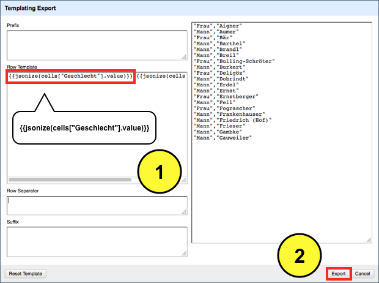
Wenn die finale Datenstruktur bereits im Vorfeld bekannt (xml oder json) ist, sollte man die erforderlichen Strukturdefinitionen in der
Prefix, Row Template, Row Seperator und Suffix Maske mitdefinieren.
Published: 7. Juni, 2012 CONTENT NUTZUNG: CC BY-NC-SA 3.0
Follow @pushthings4ward
CDU/CSU angehören. Alle anderen Abgeordneten sollen für die Analyse ausgeblendet werden.
Wie gehe ich vor - ich werde eine neue Spalte mit dem Namen
"CDU/CSU" anlegen, die mit zwei Merkmalen bestückt sein wird - true und false. Dann lasse ich OpenRefine die Spalte "Name, Vorname" nach dem Merkmal CDU/CSU durchsuchen und das Ergebnis in die neue Spalte "CDU/CSU" übertragen. Anschließend werde ich über die Text Facet Funktion alle Merkmale ausblenden, die nicht meiner definierten Suche entsprechen.
Nachdem ich die Daten importiert habe, wähle ich das
Dropdown Menü der Spalte "Name, Vorname" aus. Dort fahre ich mit der Maus über den Menüpunkt Edit column und wähle aus dem sich öffnenden Fenster die Option Add column based on this column aus.
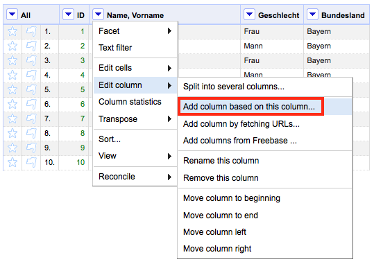
Eine neue Eingabemaske öffnet sich. Hier definiere ich den Namen
"CDU/CSU" der neuen Spalte, in der die Merkmale true und false abgelegt werden sollen. Danach weise ich OpenRefine mit dem Befehl value.contains("CDU/CSU") an die Spalte nach dem Merkmal "CDU/CSU" zu durchsuchen und das Ergebnis in die Spalte "CDU/CSU" einzutragen. Im Preview Fenster wird das Ergebnis präsentiert. Ich beende die Eingaben mit einem Klick auf OK und kehre automatisch zum Dashboard zurück.
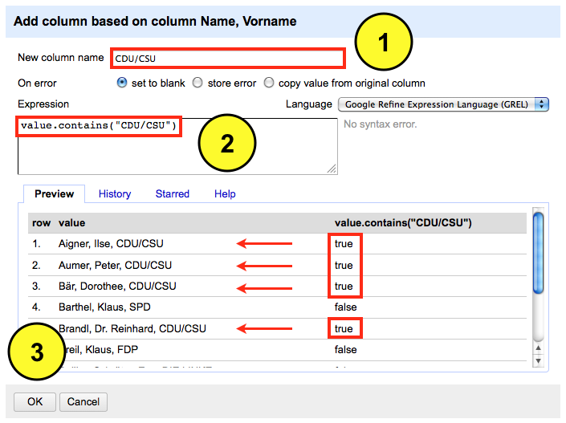
Rechts neben der Spalte
"Name, Vorname" sieht man jetzt die Spalte "CDU/CSU". Als nächstes werde ich die zwei Ausprägungen true und false mit der Text Facet Funktion clustern.
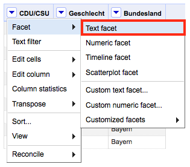
Das Ergebnis der Fusion wird auf der linken Seite des Dashboards präsentiert. Ich habe 237 Zeilen die das Merkmal
CDU/CSU tragen sowie 383 Zeilen, auf die das nicht zutrifft. Wenn ich jetzt auf den Ausdruck true klicke, werden mir nur noch jene Zeilen angezeigt, die das definierte Merkmal tragen.

Published: 14. März, 2012 CONTENT NUTZUNG: CC BY-NC-SA 3.0
Follow @pushthings4ward
Replace Funktion ist eine alternative Syntax (GREL=Google Refine Expression Language) für Suchen und Ersetzen. Wenn man beide Befehlszeilen näher betrachtet, werden die Gemeinsamkeiten schnell deutlich.
value.replace(“Apfel”, “Birne) und replace(value, "Apfel", "Birne")
somit bietet die Syntax mehrere Wege an, um ans Ziel zu kommen.
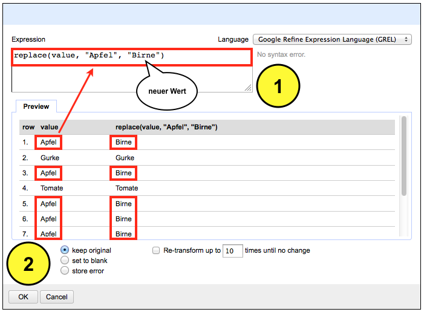
Published: 6. Mai, 2012 CONTENT NUTZUNG: CC BY-NC-SA 3.0
Follow @pushthings4ward
Datentabellen, die in HTML auf Webseiten eingebunden sind, lassen sich nicht immer problemlos durch Copy & Paste in ein neues Dokument überführen. Oft werden HTML Fragmente übernommen, die die Tabellenstruktur zerstören. Bis vor wenigen Monaten konnte man den mächtigen Service von Needlebase für diese Aufgabe in Anspruch nehmen. Derzeit wird Needlebase in die Google Produktfamilie integriert – hoffentlich in OpenRefine. Bis dahin setze ich momentan auf Scraper – eine Google Chrome Extension, die brauchbare Ergebnisse liefert. Prima an der Extension ist die direkte Exportfunktion in ein Google Spreadsheet, d.h. man benötigt ein Google Account.
Und so einfach kommt man an die Datentabelle: Zunächst muss die Google Chrome Extension Scraper installiert werden. Für die Demonstration habe ich mir die aktuelle Übersicht der bisherigen Bundespräsidenten der Bundesrepublik Deutschland auf Wikipedia ausgesucht. Ich markiere die ersten vier Zeilen der Tabelle und klicke auf die rechte Maustaste. Dort wähle ich aus dem Menü die Option Scrape similar aus. Scraper selektiert nun automatisch alle nachfolgenden Zeilen, die zur Tabelle gehören.

Und so sieht das Ergebnis aus. Sollte das Ausgabefenster leer sein, genügt ein Klick auf die rechte Maustaste und die Auswahl der Option Neu laden, um das Ergebnis sichtbar zu machen. Ein abschließender Klick auf Export to Google Docs leitet uns auf die Webseite von Google weiter, falls wir nicht schon eingeloggt waren. Dort erscheint nun die Tabelle in einem Google Spreadsheet.

Published: 30. März, 2012 CONTENT NUTZUNG: CC BY-NC-SA 3.0
Follow @pushthings4ward
Mehrere Datentabellen mit XPath exportieren
Vor einiger Zeit habe ich die Google Chrome Extension Scraper vorgestellt. Damit lassen sich Datentabellen aus HTML Webseiten direkt in ein Google Spreadsheet exportieren. Heute zeige ich wie man direkt mehrere Datentabellen aus einer Webseite mit Scraper exportiert. Für die Übung habe ich mir Twitters Entwicklerseite ausgesucht, da man dort direkt mehrere Datentabellen (hier rot umrahmt) hintereinander findet. Ich markiere die ersten drei Zeilen der ersten Tabelle und klicke auf die rechte Maustaste. Dort wähle ich aus dem Menü die Option Scrape similar aus. Scraper selektiert nun automatisch alle nachfolgenden Zeilen, die zur Tabelle gehören.
Und so sieht das Ergebnis aus. Sollte das Ausgabefenster leer sein, genügt ein Klick auf die rechte Maustaste und die Auswahl der Option Neu laden, um das Ergebnis sichtbar zu machen.
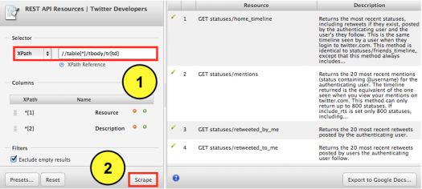
Auf der rechten Seite sieht man jetzt alle abgetragenen Datenzeilen der ersten Tabelle. Da wir aber alle Tabellen auf der Webseite abtragen wollen, wenden wir unseren Blick nach Links auf die Eingabemaske “XPath“, die folgende Befehlszeile enthält: //table[1]/tbody/tr[td]
Aka.: Scrape alle Datenzeilen, die zu der ersten Tabelle gehören. Ich ersetze die 1, die hier für die erste Tabelle steht, durch ein * und klicke anschließend auf Scrape. Das * hebt die Selektion auf die erste Tabelle auf und greift nun beim Scrapen auf alle Tabellen zu. Auf der rechten Seite füllt sich nun die Voransicht mit allen verfügbaren Datenzeilen. Sollte das Ausgabefenster leer sein, genügt ein Klick auf die rechte Maustaste und die Auswahl der Option Neu laden, um das Ergebnis sichtbar zu machen.
Published: 9. April, 2012 CONTENT NUTZUNG: CC BY-NC-SA 3.0
Follow @pushthings4ward